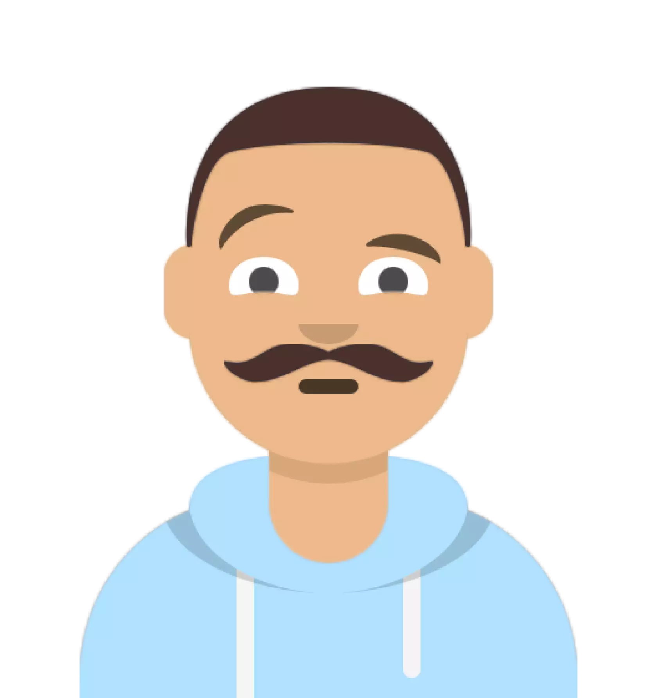

Bastiaan van Gerwen
My hobbies
Contact details
Summary
Started in 2013 as a Research Technician that liked to work on high quality research.
After developing the skills to manage multiple studies in combination with
maintaining an mouse colony and supervising young technicians I
discovered my passion in IT.
Currently I am expanding my skillset as software developer.
Employment History
- Februari 2024 - Present: Claris low code developer
- Software development in FileMaker Pro
- August 2023 - February 2024: Teamcoordinator at Hubrecht Institute, Utrecht
- Implementing and maintaining company policy within the animal factility
Supervising medium size group of animal caretakers and shift scheduling
Assisting and guiding existing/new researchers in the facility. Setting up
guidelines for new procedures and way of working.
- December 2018 - August 2023: Senior Research Technician at Hubrecht Institute - Kops Group, Utrecht
- Managing the mouse colony including breeding,genotyping and planning/performing experiments.
Supervision of Junior Technician to educate in managing animal colonies.
Molecular and Histological analysis of animal tissue including Antibody and Fluorescent staining.
- Instructing and managing histological microscope slidescanner Olympus VS200 throughout the
institute to instruct new students, PhD's and Postdocs for using the microscope. Including support
with technical issues. Good relationship with colleagues and very independent.
- July 2014 - November 2018: Senior research Technician at Netherlands Cancer Institute, Amsterdam
- Managing and performing preclinical/oncology animal studies in combination with radio-
therapy and luciferase visualisation techniques. Enormous amount of contact with external
researchers for planning and designing experiments.
Designed and maintained templates for tumor growth, weight loss and study design.
Strong independent and versatile to work with other people
- March 2013 - June 2014: Research Technician at Netherlands Cancer Institute
- Responsible for protein purification and building Nucleosome Core Particles.
Education